![]()
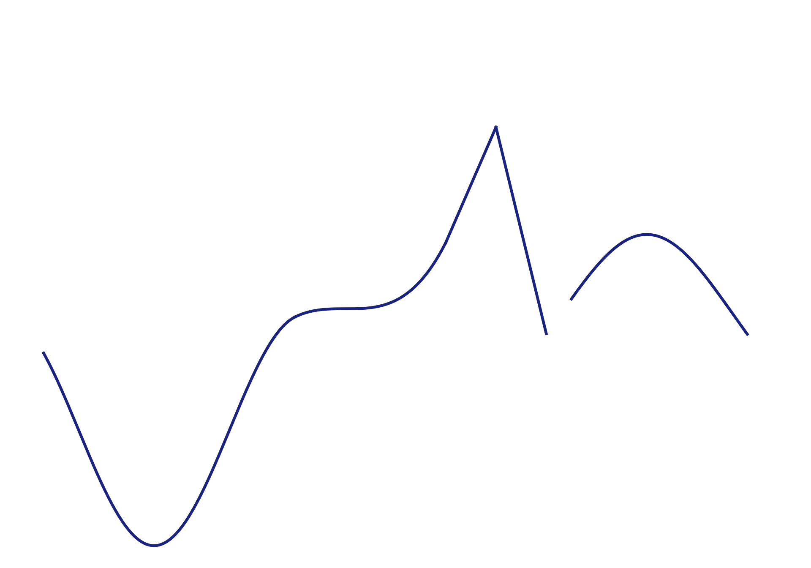
Cálculo I
Aplicaciones
2026-05-31
Aplicaciones: Resumen de la sección Y objetivos
Aplicaciones: Resumen de la sección y objetivos
En esta presentación, aprenderás
Cómo las derivadas hacen que los problemas difíciles sean más fáciles.
Cómo usar las derivadas para resolver problemas difíciles.
Cómo resolver problemas complejos utilizando derivadas.
¿Qué hacer con las derivadas?
Bosquejar funciones
\(\Rightarrow\)
¡Más fácil!
Aproximar funciones
\(\Rightarrow\)
¡Más fácil!
Resolver ecuaciones
\(\Rightarrow\)
¡Más fácil!
Optimizaciones
\(\Rightarrow\)
¡Más fácil!
¡Funciones corriendo al infinito y más allá!
En esta presentación, aprenderás
Cómo comparar qué tan rápido crecen las funciones hacia el infinito.
Una aplicación de la regla de L’Hôpital.
¡Por qué \(e^x\) crece hacia el infinito tan rápido!
La carrera ha comenzado
¿Qué crece más rápido hacia el infinito:
\(x\) ó \(x^2\)?
\[\frac{x^2}{x}\]
\[\lim_{x \to \infty} \frac{x^2}{x}\]
Respuestas posibles:
\(\infty\): El numerador crece más rápido.
\(0\): El denominador crece más rápido.
\(r\): La razón de crecimiento se estabiliza a un valor.
La carrera de polinomios
\[f(x) = 5x^3 + x^2 + x + 1\]
\[g(x) = 4x^3 + 9x^2 + 9x + 9\]
\(\displaystyle\lim_{x \to \infty} \frac{{\color{goldenrod} f(x)}}{{\color{#c0392b} g(x)}} = \frac{\infty}{\infty}\)
\(\displaystyle\lim_{x \to \infty} \frac{{\color{goldenrod} f'}}{{\color{#c0392b} g'}} =\)
\(\displaystyle\frac{15x^2 + 2x + 1}{12x^2 + 18x + 9} =\)
\(\displaystyle\frac{\infty}{\infty}\)
\(\displaystyle\lim_{x \to \infty} \frac{{\color{goldenrod} f''}}{{\color{#c0392b} g''}} = \frac{30x + 2}{24x + 18} = \frac{\infty}{\infty}\)
\(\displaystyle\lim_{x \to \infty} \frac{{\color{goldenrod} f^{(3)}}}{{\color{#c0392b} g^{(3)}}} = \frac{30}{24} = \frac{5}{4}\)
Potencias vs Exponenciales
\[f(x) = e^x\]
\[g(x) = x^2\]
\(\displaystyle\lim_{x \to \infty} \frac{{\color{goldenrod} f(x)}}{{\color{teal} g(x)}} = \frac{\infty}{\infty}\)
\(\displaystyle\lim_{x \to \infty} \frac{{\color{goldenrod} f'}}{{\color{teal} g'}} = \frac{e^x}{2x} = \frac{\infty}{\infty}\)
\(\displaystyle\lim_{x \to \infty} \frac{{\color{goldenrod} f''}}{{\color{teal} g''}} = \frac{e^x}{2} = \infty\)
Potencias vs Exponenciales
\[f(x) = {\color{goldenrod} e}^x\]
\[g(x) = {\color{teal} x}^n\]
\[\lim_{{\color{teal} x} \to \infty} \frac{f({\color{teal} x})}{g({\color{teal} x})} = \frac{\infty}{\infty}\]
\[\lim_{{\color{teal} x} \to \infty} \frac{f'}{g'} = \frac{{\color{goldenrod} e}^{\color{teal} x}}{n{\color{teal} x}^{n-1}} = \frac{\infty}{\infty}\]
\[\lim_{{\color{teal} x} \to \infty} \frac{f'}{g'} = \frac{{\color{goldenrod} e}^{\color{teal} x}}{c} = \infty\]
El exponente natural crece hasta el infinito más rápido que cualquier potencia (o cualquier función no infinitamente diferenciable)
Potencias vs Exponenciales
\({\color{goldenrod}f}({\color{teal}x}) = e^{{\color{teal}-x}}\)
\({\color{maroon}g}({\color{teal}x}) = {\color{teal}x}^2\)
\[\lim_{{\color{teal}x} \to \infty} \frac{{\color{goldenrod}f}({\color{teal}x})}{{\color{maroon}g}({\color{teal}x})} = \frac{{\color{maroon}0}}{\infty}\]
\[\lim_{{\color{teal}x} \to \infty} \frac{{\color{goldenrod}f}'}{{\color{maroon}g}'} = \frac{{\color{teal}-e^{{\color{teal}-x}}}}{{\color{maroon}2}} = \frac{{\color{maroon}0}}{{\color{maroon}2}}\]
La prueba de la segunda derivada
En esta presentación, aprenderás
Qué es la prueba de la “segunda derivada”.
Cómo usar la prueba de 2.’ para evaluar un punto crítico.
Intuición de por qué funciona la prueba de 2.’ (advertencia: no es muy intuitiva).
Cuándo y por qué la prueba de 2.’ es inconclusa.
Recordemos sobre los puntos críticos
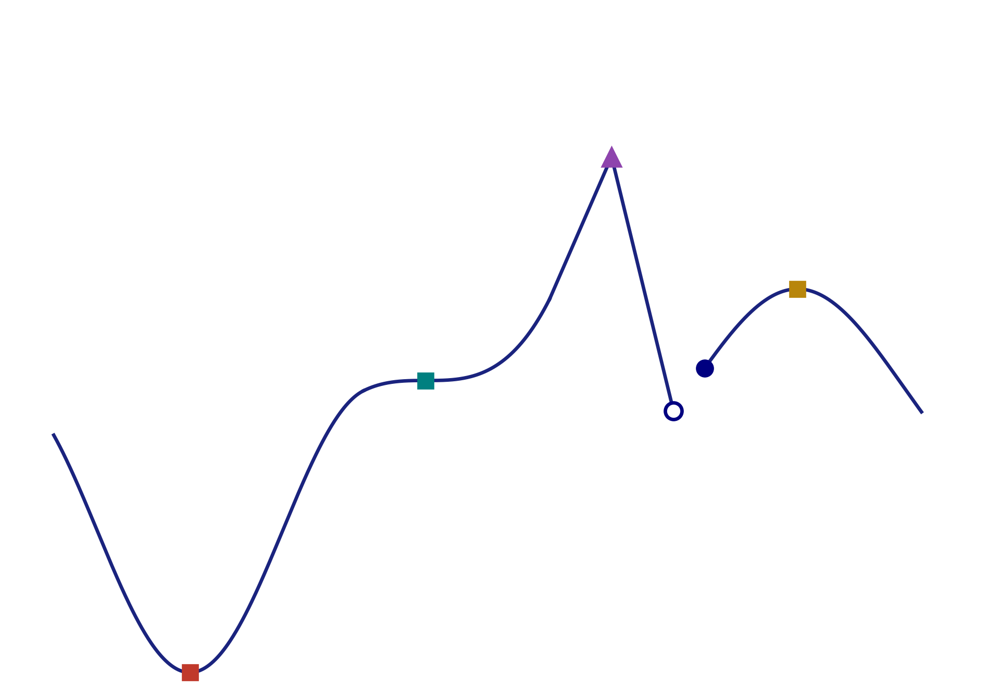

La prueba 2da derivada
si \(\tilde{{\color{#148777}x}}\) es un punto crítico \(f\), y
si \(f'(\tilde{{\color{#148777}x}})\) y \(f''(\tilde{{\color{#148777}x}})\) existe, entonces:
\[f''(\tilde{{\color{#148777}x}}) > {\color{maroon}0} \;\to\; f(\tilde{{\color{#148777}x}}) \text{ es un mínimo local,}\]
\[f''(\tilde{{\color{#148777}x}}) < {\color{maroon}0} \;\to\; f(\tilde{{\color{#148777}x}}) \text{ es un máximo local,}\]
\[f''(\tilde{{\color{#148777}x}}) = {\color{maroon}0} \;\to\; \text{inconclusivo.}\]
La prueba 2da derivada Ejercicio -1-
\({\color{goldenrod} f} = {\color{teal} x}^4 - 8{\color{teal} x}^2\)
\({\color{goldenrod} f'} = 4{\color{teal} x}^3 - 16{\color{teal} x}\)
\({\color{goldenrod} f''} = 12{\color{teal} x}^2 - 16\)
\({\color{goldenrod} f'} = 0\)
\(0 = 4{\color{teal} x}^3 - 16{\color{teal} x}\)
\(0 = {\color{teal} x}(4{\color{teal} x}^2 - 16)\)
\(0 = 4{\color{teal} x}^2 - 16\)
\(16 = 4{\color{teal} x}^2\)
\(4 = {\color{teal} x}^2\)
\({\color{teal} x} = {\color{goldenrod} -2, 0, 2}\)
\({\color{goldenrod} f} = {\color{teal} x}^4 - 8{\color{teal} x}^2\)
\({\color{goldenrod} f''(-2) > 0}\)
\({\color{goldenrod} f''(0) < 0}\)
\({\color{goldenrod} f''(2) > 0}\)
\({\color{goldenrod} f} = {\color{teal} x}^4 - 8{\color{teal} x}^2\)
Conclusiones:
\(f(-2)\) es un mínimo local
\(f(0)\) es un máximo local
\(f(2)\) es un mínimo local
\({\color{goldenrod} f''(-2) > 0}\)
\({\color{goldenrod} f''(0) < 0}\)
\({\color{goldenrod} f''(2) > 0}\)
Intuición detrás de la prueba 2da derivada
\({\color{goldenrod} f}({\color{teal} x}) = {\color{teal} x}^4 - 8{\color{teal} x}^2\)
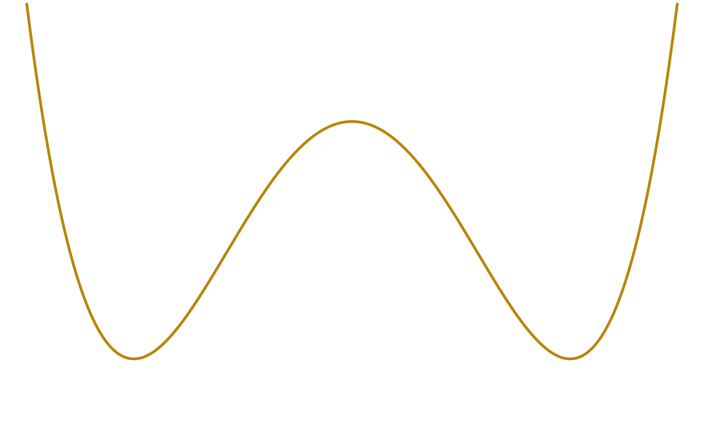
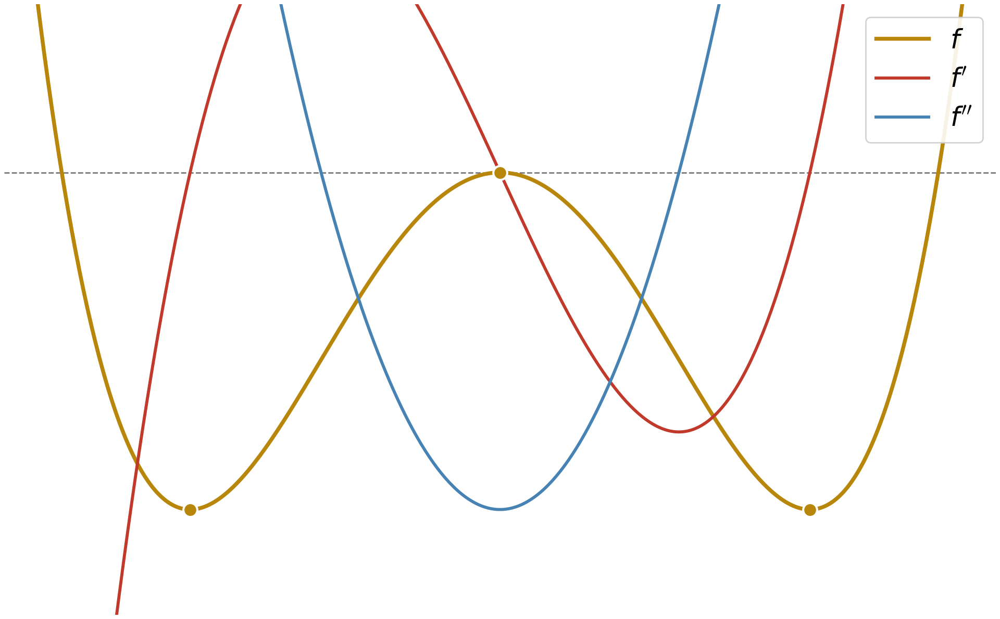
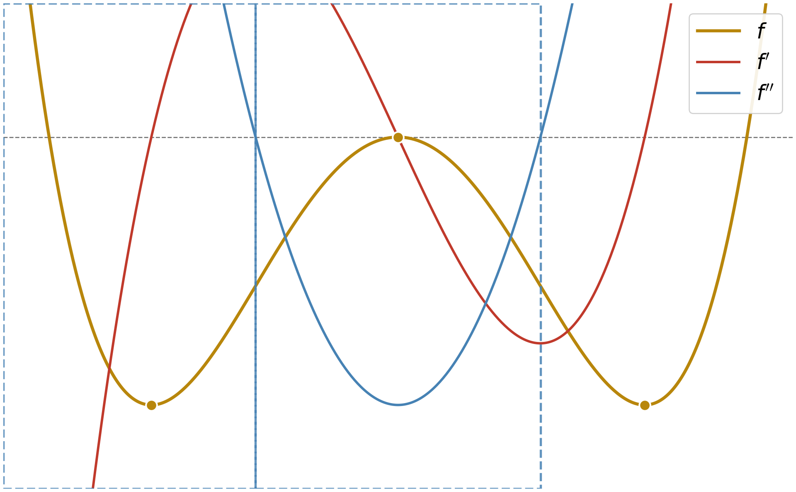
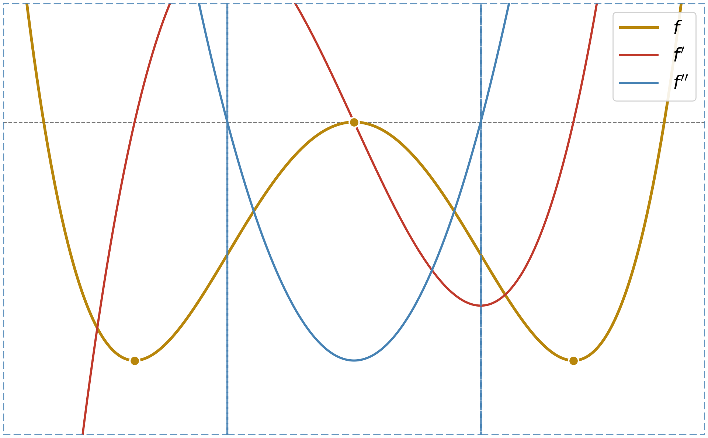
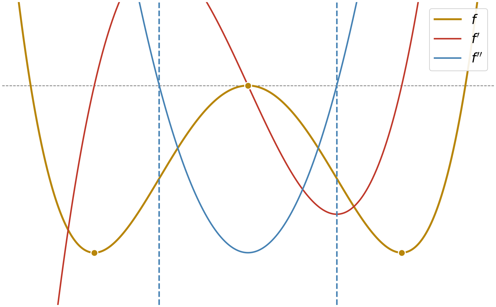
Ejemplo 2
\({\color{goldenrod} f}({\color{teal} x}) = 2\pi{\color{teal} x} + \sin(\pi{\color{teal} x})\)
\({\color{goldenrod} f}'({\color{teal} x}) = 2\pi + \pi\cos(\pi{\color{teal} x})\)
No critical points!
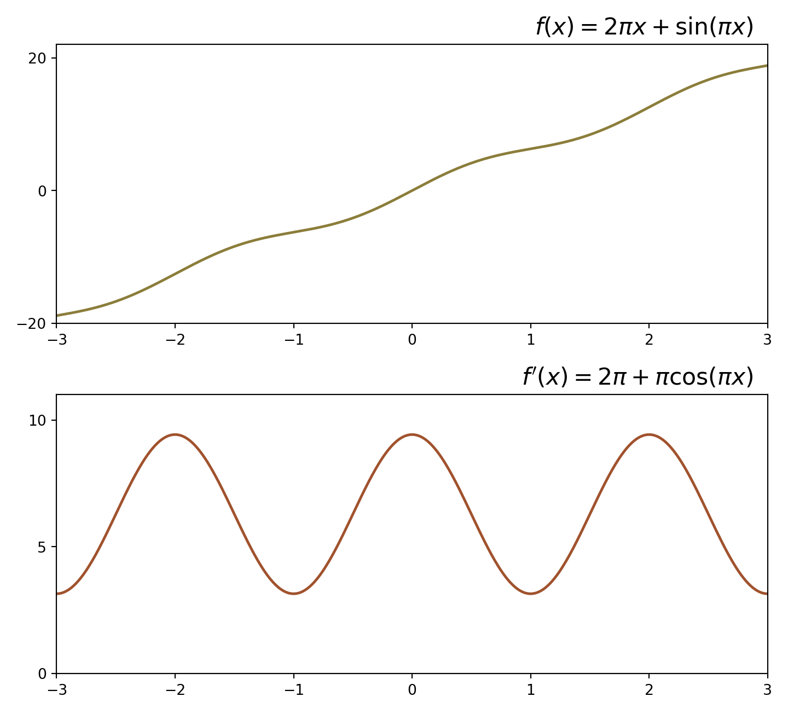
DesafioCode: Prueba de la 2da derivada
En esta presentación, aprenderás
How to implement the second derivative test in python.
More about working with sympy.
Implementando la prueba de la 2da derivada
Ejercicio 1: Compute and plot the derivatives
\[f = {\color{teal} x}^4 - 8{\color{teal} x}^2\]
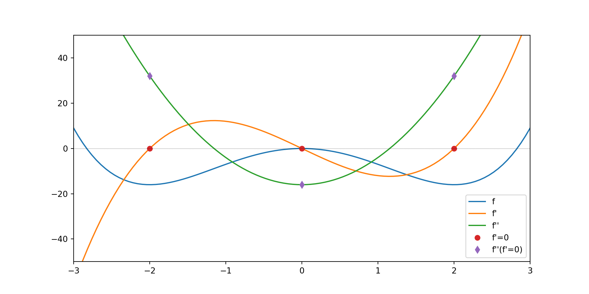
Taller de programación
import numpy as np
import sympy as sym
import matplotlib.pyplot as plt
from IPython.display import display,Math
# better image resolution
import matplotlib_inline.backend_inline as disPlay
disPlay.set_matplotlib_formats('svg')
x = sym.symbols('x')
# the function and its derivatives
f = x**4 - 8*x**2
df = sym.diff(f,x)
ddf = sym.diff(f,x,2)
# find f'=0
critPoints = np.array( sym.solve(df) )
critPoints
# lambdify and plot
f_l = sym.lambdify(x,f)
df_l = sym.lambdify(x,df)
ddf_l = sym.lambdify(x,ddf)
xx = np.linspace(-3,3,101)
plt.plot(xx,f_l(xx),label="f")
plt.plot(xx,df_l(xx),label="f'")
plt.plot(xx,ddf_l(xx),label="f''")
plt.plot(critPoints,df_l(critPoints),'o',label="f'=0")
plt.plot(critPoints,ddf_l(critPoints),'d',label="f''(f'=0)")
plt.plot(xx[[0,-1]],[0,0],'k--',linewidth=.2)
plt.ylim([-50,50])
plt.xlim(xx[[0,-1]])
plt.legend()
plt.show()Resultado de la ejecución:
\[f = x^{4} - 8 x^{2}\]
\[f' = 4 x^{3} - 16 x\]
\[f'' = 4 \left(3 x^{2} - 4\right)\]
\[\text{Critical points: } -2, 0, 2\]
(-50.0, 50.0) (-3.0, 3.0) 
Ejercicio 2: Implementar la prueba de la 2da derivada
Recorrer todos los puntos críticos.
Probar cada uno e informar los resultados.
\[f(-2) > 0 \;\Longrightarrow\; f(-2) \text{ es un mínimo local}\]
\[f(0) < 0 \;\Longrightarrow\; f(0) \text{ es un máximo local}\]
\[f(2) > 0 \;\Longrightarrow\; f(2) \text{ es un mínimo local}\]
Aproximación Lineal
En esta presentación, aprenderás
Qué significa aproximar linealmente una función.
Por qué son importantes las aproximaciones lineales.
La fórmula para las aproximaciones lineales (pista: ¡involucra la derivada!).
¿Qué es una aproximar linealmente Lineal?
En esta presentación, aprenderás
Las funciones no lineales pueden aproximarse bien mediante funciones lineales si \(dx\) es “suficientemente pequeño”.
Las funciones no lineales pueden ser difíciles de calcular, requieren mucho tiempo y son propensas a imprecisiones numéricas.
Las funciones lineales son fáciles, rápidas y precisas.
(Las aproximaciones lineales eran extremadamente importantes antes de las computadoras, pero se siguen usando ahora).
¿Cómo funcionan las aproximaciones lineales?
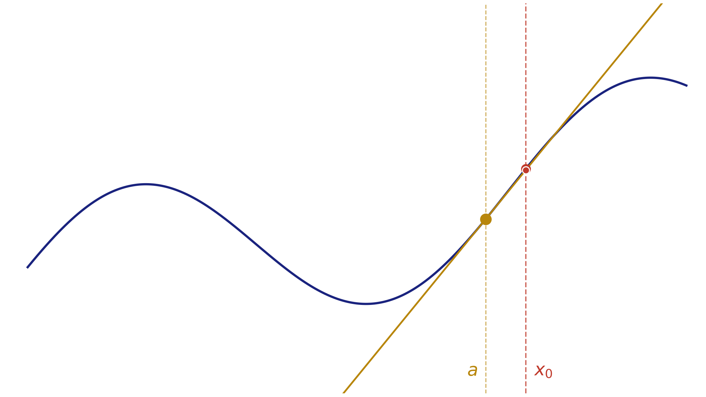
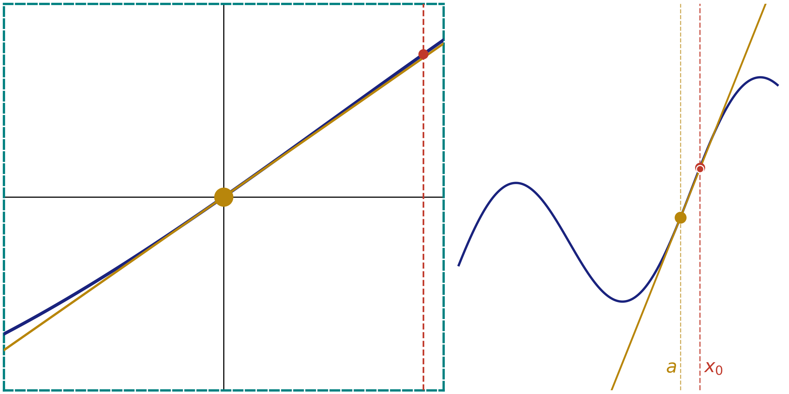
Fórmula para la aproximación Lineal
\[{\color{goldenrod} f(x_0)} \approx {\color{navy} f'(a)(x_0-a)} + {\color{#c0392b} f(a)}\]
\[{\color{goldenrod} y} = {\color{navy} m}{\color{teal} x} + {\color{#c0392b} b}\]
Aproximación
Pendiente
dx
Intercepto
\[{\color{goldenrod} f(x_0)} \approx {\color{navy} f'(a)(x_0-a)} + {\color{#c0392b} f(a)}\]
\[{\color{goldenrod} L(x_0)} = {\color{#c0392b} f(a)} + {\color{navy} f'(a)(x_0-a)}\]
Ejemplo de aproximación Lineal -1a-
\[{\color{goldenrod} f}({\color{teal} x}) = \sqrt{{\color{teal} x}} + 2{\color{teal} x}\]
\[{\color{goldenrod} f'}({\color{teal} x}) = \frac{1}{2}{\color{teal} x}^{-1/2} + 2\]
\[= \frac{1}{2 \sqrt{{\color{teal} x}}} + 2\]
\[{\color{#c0392b} a} = 4\] \[{\color{teal} x_0} = 4.37\] \[{\color{goldenrod} L(x_0)} = {\color{navy} f'(a)(x_0-a)} + {\color{#c0392b} f(a)}\]
Ejemplo de aproximación Lineal -1b-
\(\displaystyle{\color{goldenrod} L(x_0)} = {\color{navy} f'(a)}({\color{teal} x_0} - {\color{#c0392b} a}) + {\color{#c0392b} f(a)}\)
\(\displaystyle= \left[\frac{1}{2\sqrt{{\color{#c0392b} 4}}} + 2\right]({\color{teal} 4.37} - {\color{#c0392b} 4}) + \left(\sqrt{{\color{#c0392b} 4}} + 2 \cdot {\color{#c0392b} 4}\right)\)
\(\displaystyle= \frac{9}{4}(.37) + 2 + 8\)
\(\displaystyle= 10.8325\)
\(\displaystyle f(x_0)= 10.8304544960\)
Ejemplo de aproximación Lineal -1c-
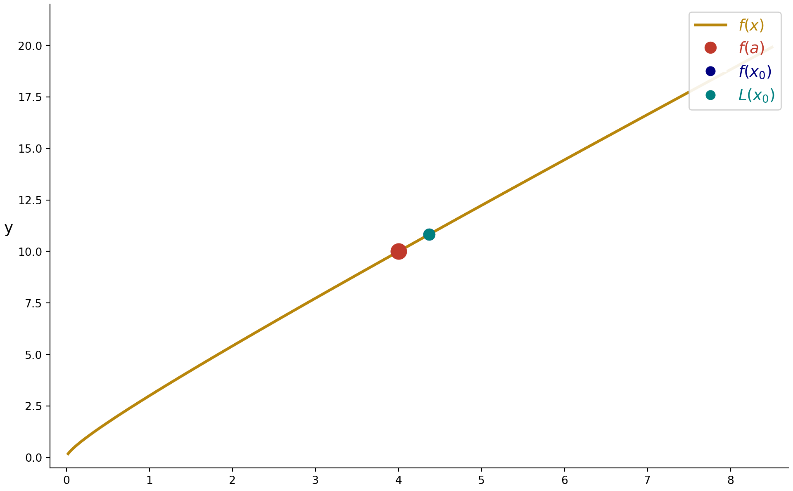
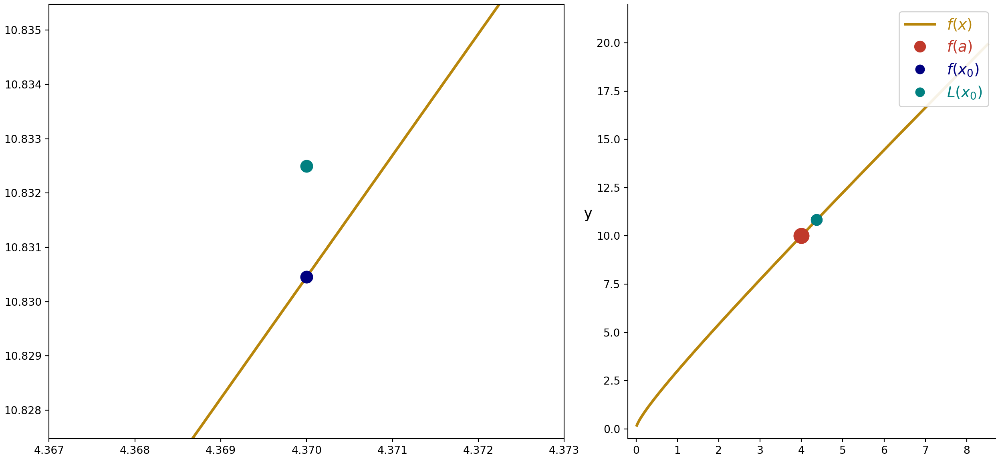
Ejemplo de aproximación Lineal -2a-
\[{\color{goldenrod} f}({\color{teal} \zeta}) = |\sin({\color{teal} \zeta})|\]
\[{\color{goldenrod} f'}({\color{teal} \zeta}) = \mathrm{sgn}(\sin({\color{teal} \zeta}))\cos({\color{teal} \zeta})\]
\[{\color{#c0392b} a} = \pi/2\] \[{\color{teal} x_0} = 5\pi/8\] \[{\color{goldenrod} L(x_0)} = {\color{navy} f'(a)}({\color{teal} x_0} - {\color{#c0392b} a}) + {\color{#c0392b} f(a)}\]
Ejemplo de aproximación Lineal -2b-
\(\displaystyle{\color{goldenrod} L(x_0)} = {\color{navy} f'(a)}({\color{teal} x_0} - {\color{#c0392b} a}) + {\color{#c0392b} f(a)}\)
\(\displaystyle= \mathrm{sgn}(\sin({\color{#c0392b} \pi/2})) \cos({\color{#c0392b} \pi/2})({\color{teal} 5\pi/8} - {\color{#c0392b} \pi/2}) + |\sin({\color{#c0392b} \pi/2})|\)
\(\displaystyle= 1 \cdot 0 \cdot () + 1\)
\(\displaystyle= 1\)
\(\displaystyle{\color{goldenrod} f}({\color{teal} 5\pi/8}) = 0.923879532511287\)
Ejemplo de aproximación Lineal -2c-
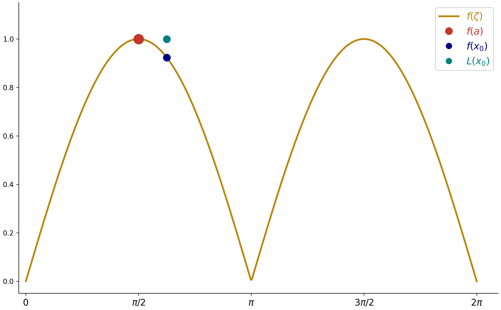
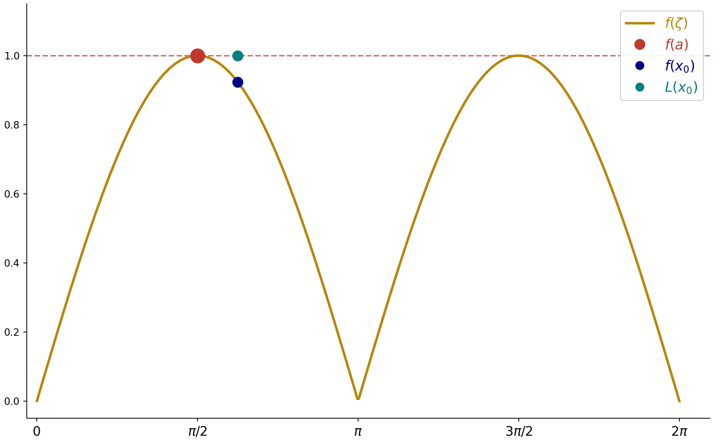
Escenarios de falla de aproximacion lineal
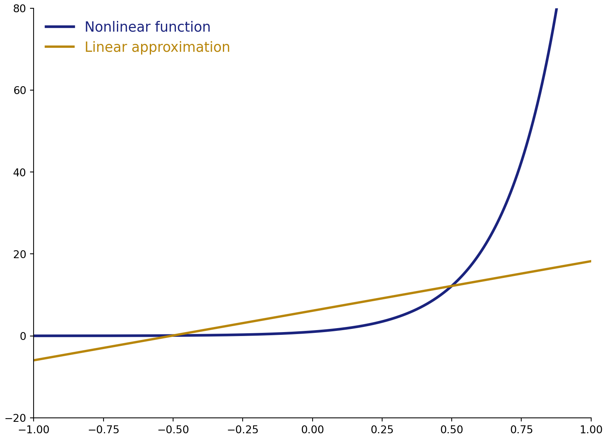
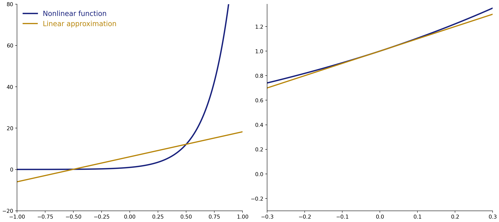
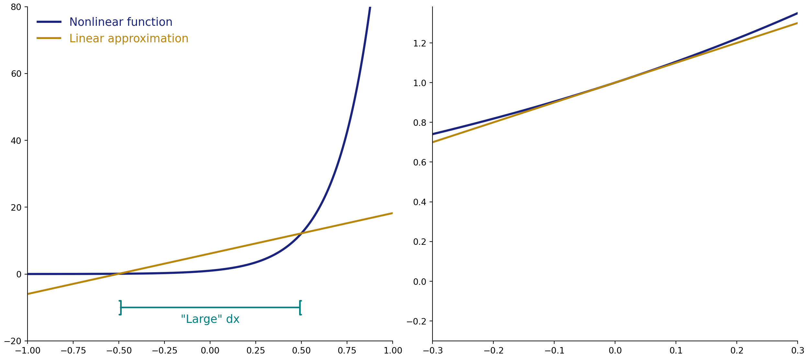
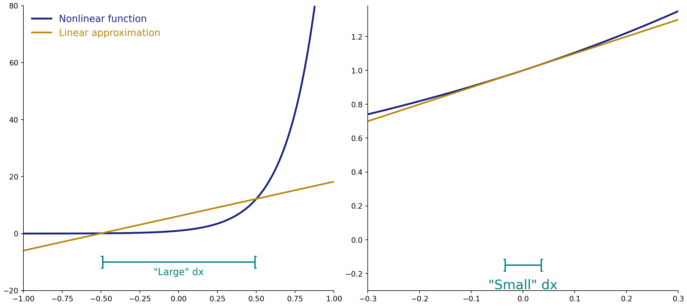
Escenario ganador de aproximacion lineal
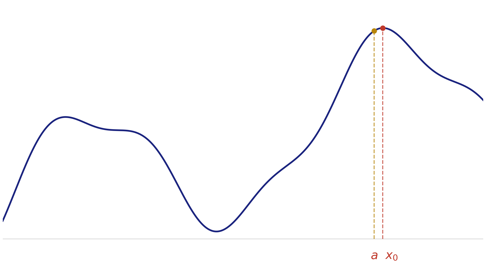
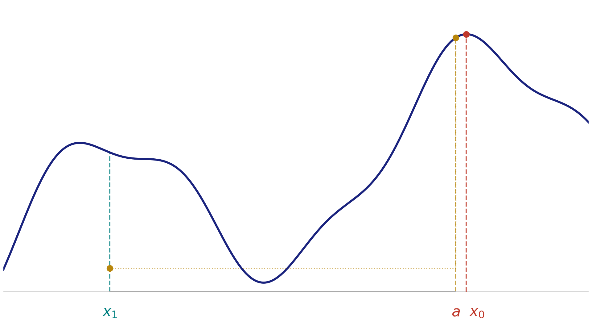
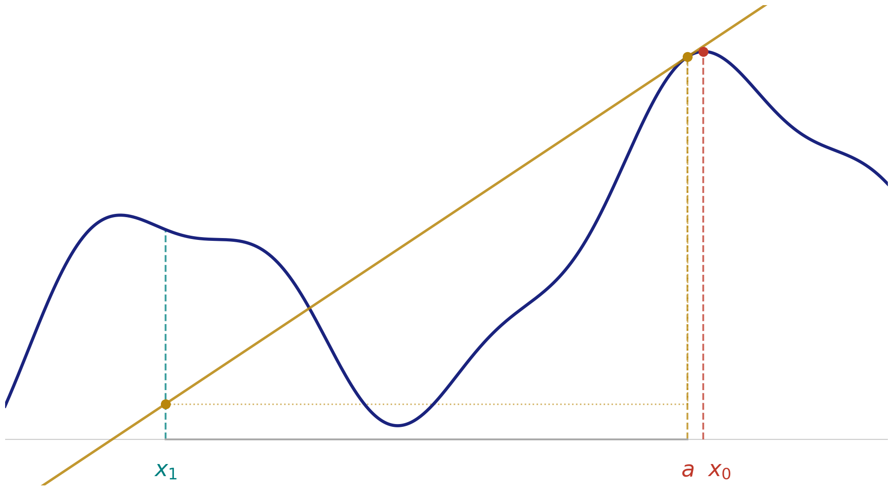
Escenario ganador de aproximacion lineal
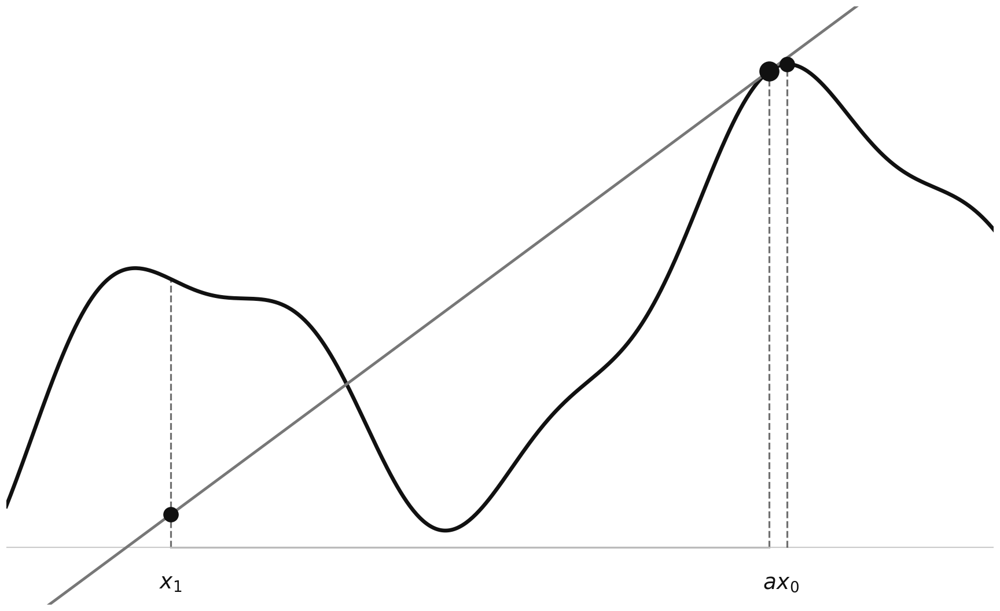
¿Qué tan cerca deben estar \(a\) y \(x_0\)?
— Depende de la función.
¿Cuál es un error aceptable?
— Depende de la aplicación.
¿La aproximación sobreestima o subestima?
— Depende de la curvatura.
El método de Newton para encontrar raíces
En esta presentación, aprenderás
Qué son las “raíces” de una función.
Cómo estimar raíces usando el método de Newton.
Posibles escenarios de falla y estrategias de mitigación.
Raiz de un a función (algebra)
\(f({\color{teal} x}) = 0\)
\(2{\color{teal} x}^2 + {\color{teal} x} = 0\)
\(e^{\color{teal} x} \overset{?}{=} 0\)
\(3{\color{teal} x}^3 + 2{\color{teal} x} = 7\pi\)
\(3{\color{teal} x}^3 + 2{\color{teal} x} - 7\pi = 0\)
Método de Newton para encontrar raíces -1a-

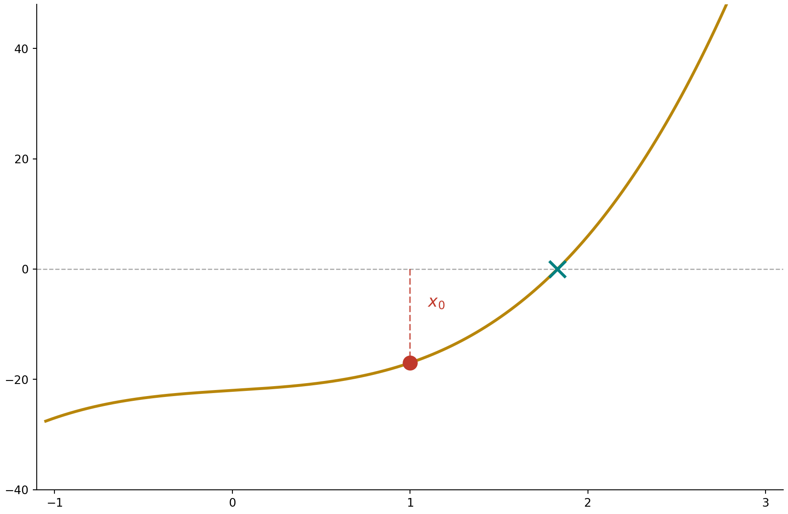

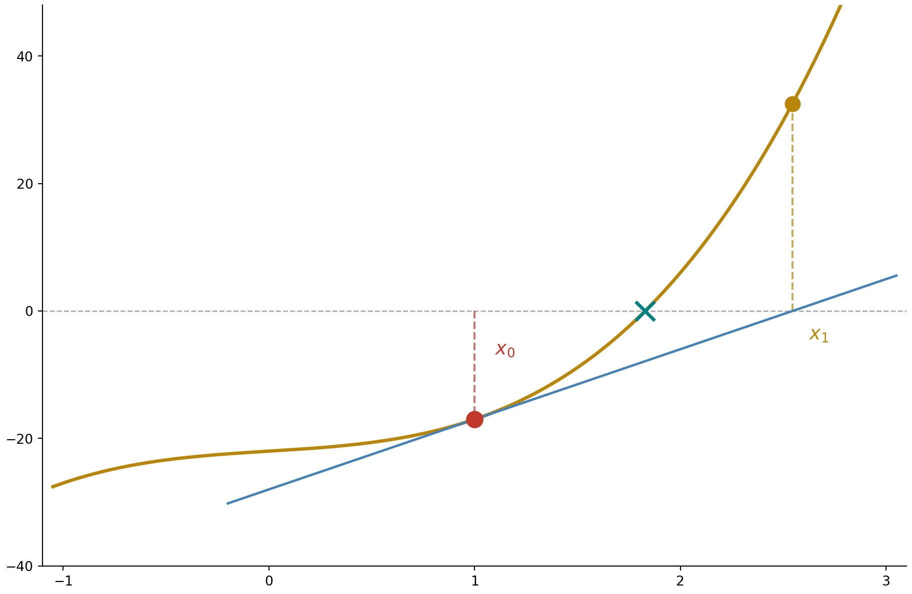

Método de Newton para encontrar raíces -1b-

\[\frac{0 - {\color{goldenrod} f(x_n)}}{{\color{navy} x_{n+1} - x_n}}\]
\[{\color{goldenrod} f'(x_n)} = \frac{0 - {\color{goldenrod} f(x_n)}}{{\color{navy} x_{n+1} - x_n}}\]
\[{\color{goldenrod} f'(x_n)} = \frac{0 - {\color{goldenrod} f(x_n)}}{{\color{navy} x_{n+1} - x_n}}\]
\[{\color{navy} x_{n+1} - x_n} = -\frac{{\color{goldenrod} f(x_n)}}{{\color{goldenrod} f'(x_n)}}\]
\[{\color{goldenrod} f'(x_n)} = \frac{0 - {\color{goldenrod} f(x_n)}}{{\color{navy} x_{n+1} - x_n}}\]
\[{\color{navy} x_{n+1} - x_n} = -\frac{{\color{goldenrod} f(x_n)}}{{\color{goldenrod} f'(x_n)}}\]
\[{\color{navy} x_{n+1}} = {\color{navy} x_n} - \frac{{\color{goldenrod} f(x_n)}}{{\color{goldenrod} f'(x_n)}}\]
Ejemplo -1-
\(f({\color{teal} x}) = 2{\color{teal} x}^3 - 3\)
\(\quad = 2{\color{teal} x}^3 - 3 = 0\)
\(f'({\color{teal} x}) = 6{\color{teal} x}^2\)
\({\color{#c0392b} x_0} = {\color{#c0392b} 1}\)
\[{\color{goldenrod} {x_1}} = {\color{#c0392b} 1} - \frac{f({\color{#c0392b} 1})}{f'({\color{#c0392b} 1})} = {\color{#c0392b} 1} - \frac{2({\color{#c0392b} 1})^3 - 3}{6({\color{#c0392b} 1})^2} = {\color{#c0392b} 1} - \frac{-1}{6} = \frac{{\color{goldenrod} 7}}{{\color{goldenrod} 6}}\]
\[{\color{teal} {x_2}} = \frac{{\color{goldenrod} 7}}{{\color{goldenrod} 6}} - \frac{f\!\left(\tfrac{7}{6}\right)}{f'\!\left(\tfrac{7}{6}\right)} = \frac{{\color{goldenrod} 7}}{{\color{goldenrod} 6}} - \frac{2\!\left(\dfrac{343}{216}\right) - 3}{6\!\left(\dfrac{49}{36}\right)} = {\color{teal} {1.14512}}\]
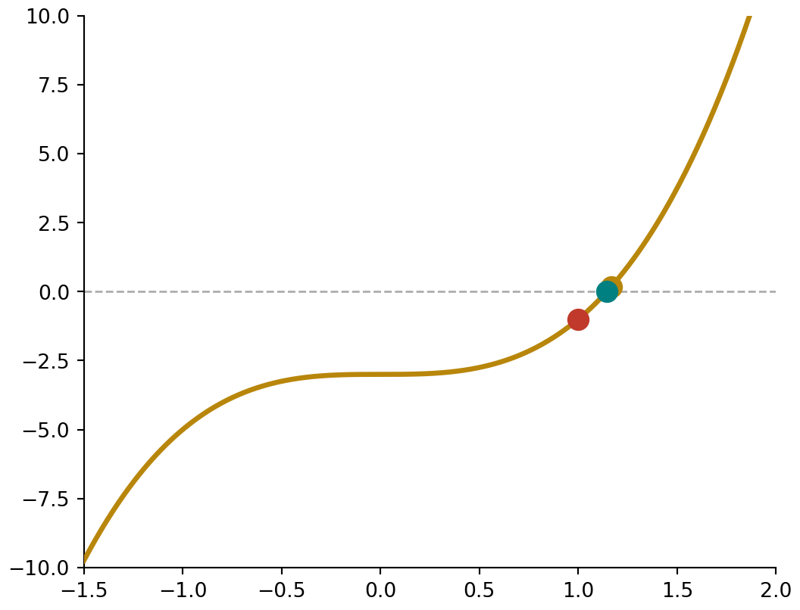
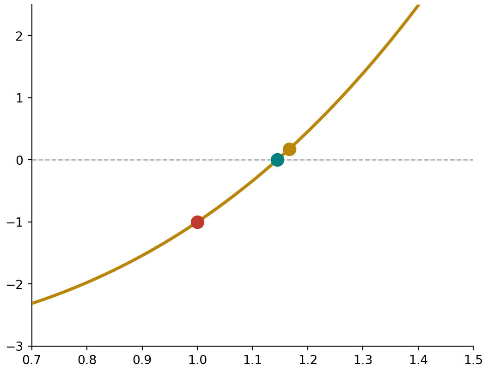
Más preciso:
\({\color{blue} x = 1.14471424255333}\)
Ejemplo -2a-
\(f({\color{teal} x}) = 2({\color{teal} x}-1)^3 = 3, \qquad {\color{#c0392b} x_0} = {\color{#c0392b} 1}\)
\(\quad = 2({\color{teal} x}-1)^3 - 3 = 0\)
\(f'({\color{teal} x}) = 6({\color{teal} x}-1)^2\)
\[{\color{goldenrod} x_1} = 1 - \frac{f(1)}{f'(1)} = 1 - \frac{2(1-1)^3 - 3}{6(1-1)^2} = 1 - \frac{-3}{{\color{#c0392b} 0}}\]
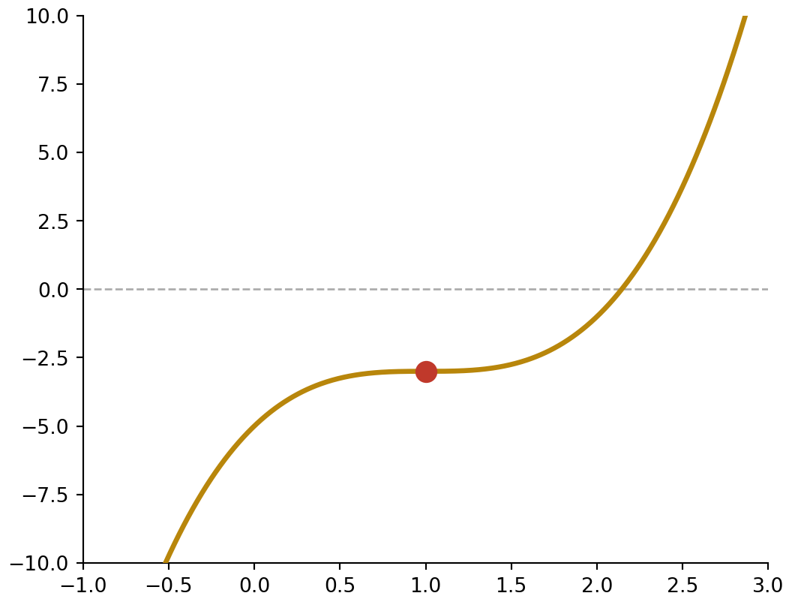
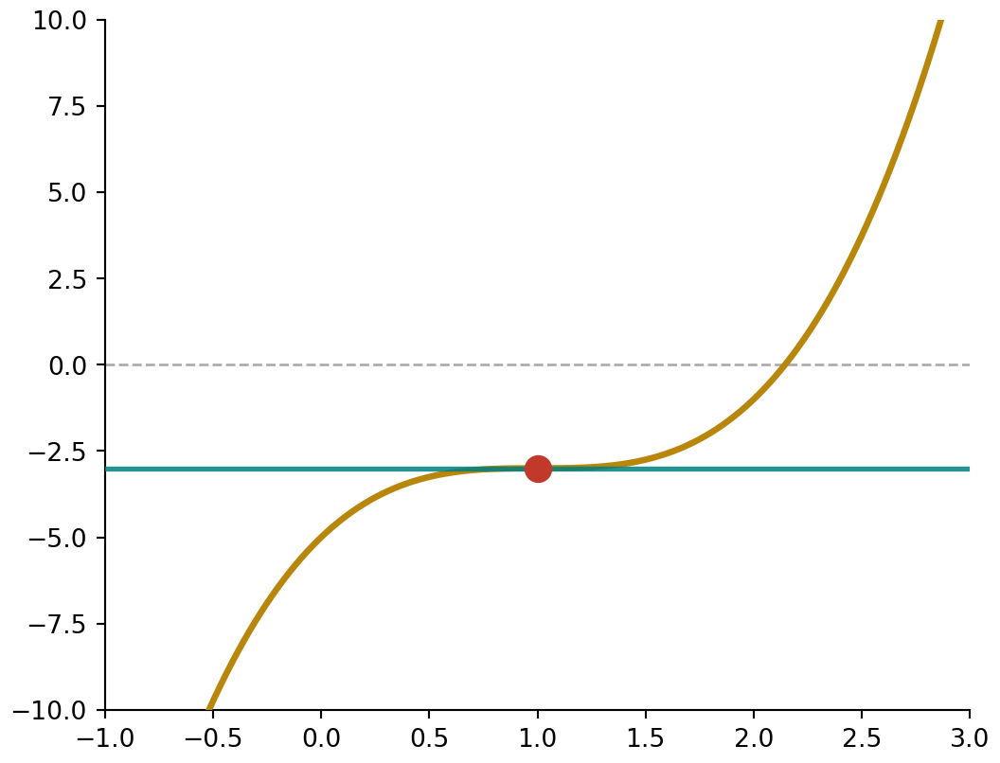
Ejemplo -2b-
\(f({\color{teal} x}) = 2({\color{teal} x}-1)^3 = 3, \qquad {\color{#c0392b} x_0} = {\color{#c0392b} 2}\)
\(\quad = 2({\color{teal} x}-1)^3 - 3 = 0\)
\(f'({\color{teal} x}) = 6({\color{teal} x}-1)^2\)
\[{\color{goldenrod} x_1} = {\color{#c0392b} 2} - \frac{f({\color{#c0392b} 2})}{f'({\color{#c0392b} 2})} = {\color{#c0392b} 2} - \frac{2({\color{#c0392b} 2}-1)^3 - 3}{6({\color{#c0392b} 2}-1)^2} = {\color{#c0392b} 2} - \frac{-1}{6} = \frac{{\color{goldenrod} 13}}{{\color{goldenrod} 6}} = 2.1667\]
More accurate:
\({\color{blue} x = 2.14471424255333}\)
Escenarios de fallos del método de Newton
Una mala suposición inicial puede llevar a falta de convergencia.
– Elige una suposición inicial más cercana a \({\color{goldenrod} f(x_n)=0}\)
\({\color{#c0392b} f'(x_n) = 0}\)
– Elige otra suposición inicial
Derivada desconocida o difícil de calcular
– Usa el “método de la secante” (pendiente local empírica)
F(x) no tiene raíces reales
– Acepta esta respuesta, o encuentra el valor mínimo
Resolución de problemas de optimización simple
En esta presentación, aprenderás
Un tipo típico de problema de cálculo de tarea/examen.
Cómo resolver problemas de maximización.
Que plantear el problema suele ser la parte difícil.
Enunciado especifico del problema
Un granjero quiere cercar un área rectangular usando XX metros de valla.
Un museo quiere maximizar el área delimitada por una cuerda usando XX metros de cuerda.
Un profesor de cálculo quiere crear un problema de optimización que involucre derivadas y puntos críticos.
¿Cómo resolver problemas de optimización?
Maximiza el área de un jardín rectangular usando 50 metros de valla, dado que un lado del jardín es una pared exterior.
¿Cuáles son las dimensiones del rectángulo?
Paso 1:Analizar el problema para identificar restricciones y el objetivo de optimización.
Paso 2:Dibujar diagramas, escribir ecuaciones, despejar variables.
Paso 3:Esbozar o graficar la función de optimización.
Paso 4:Resolver la optimización.
Paso 5:Responder la pregunta original.
Maximiza el área de un jardín rectangular usando 50 metros de valla, dado que un lado del jardín es una pared exterior.
¿Cuáles son las dimensiones del rectángulo?
Maximiza el área de un jardín rectangular usando 50 metros de valla, dado que un lado del jardín es una pared exterior.
¿Cuáles son las dimensiones del rectángulo?
Distracción inútil
Información útil
Restricción
Respuesta buscada
Objetivo de optimización
Como resolver problemas de optimización - ejemplo

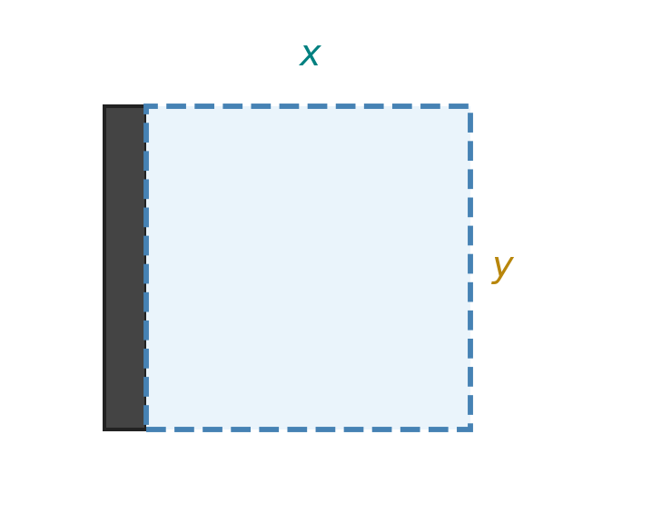
\(A = {\color{teal} x}{\color{goldenrod} y}\)
\(F = 2{\color{teal} x} + {\color{goldenrod} y} = 50\)
\({\color{goldenrod} y} = 50 - 2{\color{teal} x}\)
\(A = {\color{teal} x}(50 - 2{\color{teal} x})\)
\(\quad = 50{\color{teal} x} - 2{\color{teal} x}^2\)

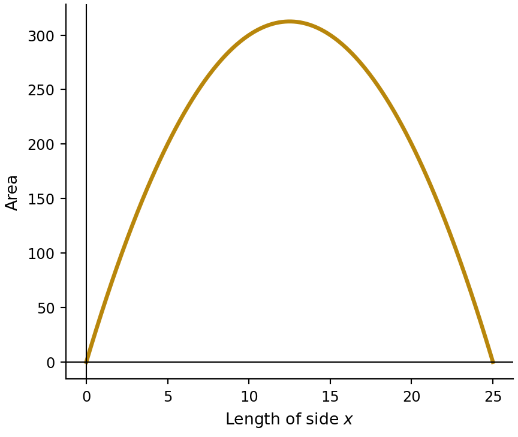

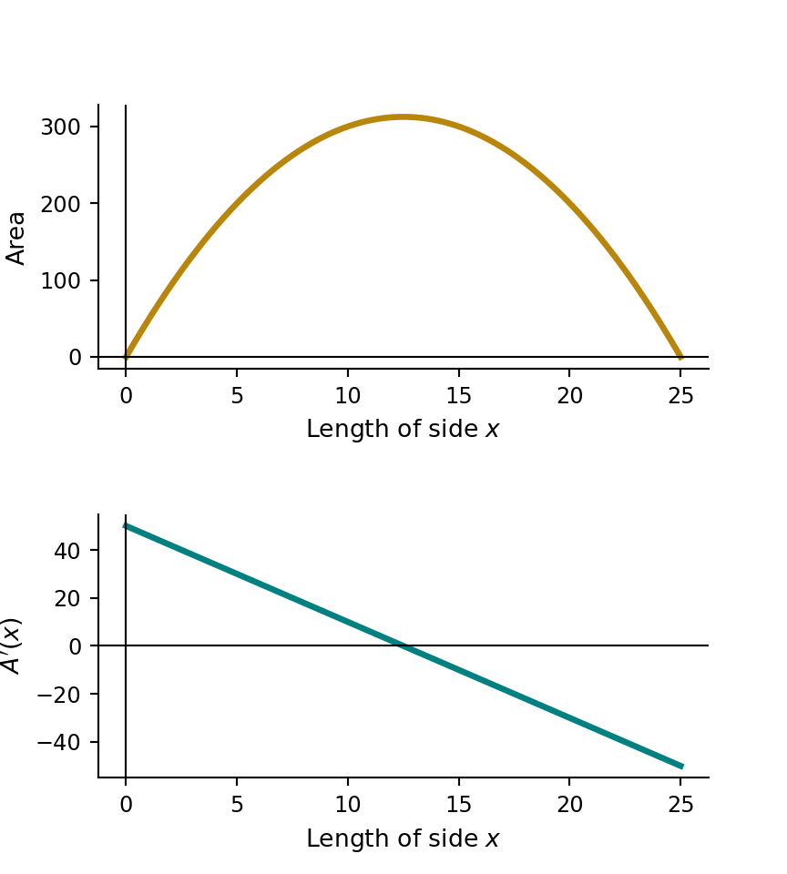

\(A = {\color{teal} x}{\color{goldenrod} y}\)
\(F = 2{\color{teal} x} + {\color{goldenrod} y} = 50\)
\({\color{goldenrod} y} = 50 - 2{\color{teal} x}\)
\(A = {\color{teal} x}(50 - 2{\color{teal} x})\)
\(\quad = 50{\color{teal} x} - 2{\color{teal} x}^2\)
\(A' = 50 - 4{\color{teal} x}\)
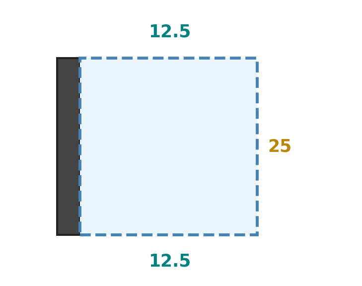
\(A' = 50 - 4{\color{teal} x} = 0 \Rightarrow {\color{teal} x} = 12.5\)
\({\color{goldenrod} y} = 50 - 2(12.5) = 25\)
Maximiza el área de un jardín rectangular usando 50 metros de valla, dado que un lado del jardín es una pared exterior.
Las dimensiones del rectángulo son \({\color{teal} 12.5}\) por \({\color{goldenrod} 25}\) metros.
El área del jardín es \({\color{#B8860B} 312.5}\) m².
Como resolver problemas de optimización - resumen
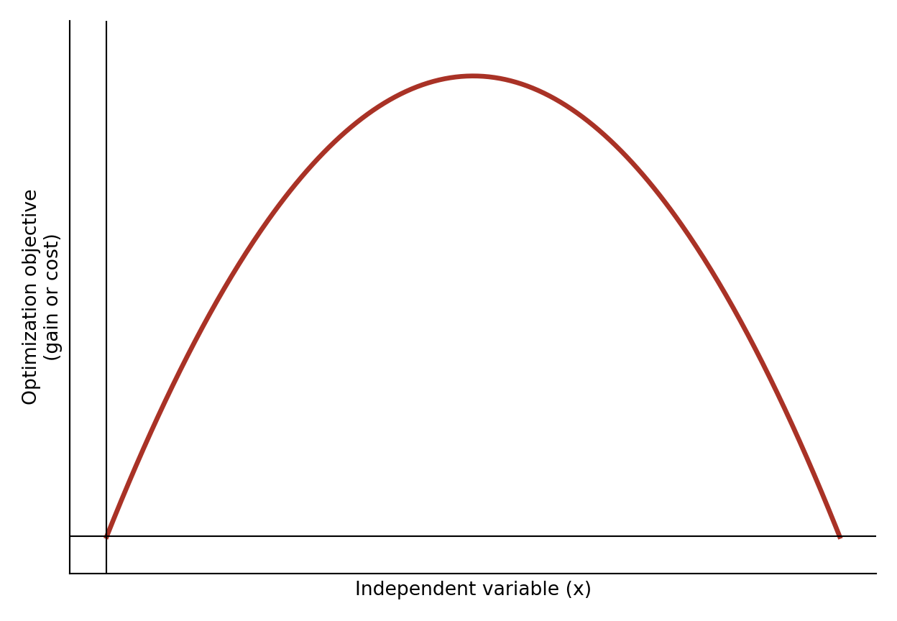
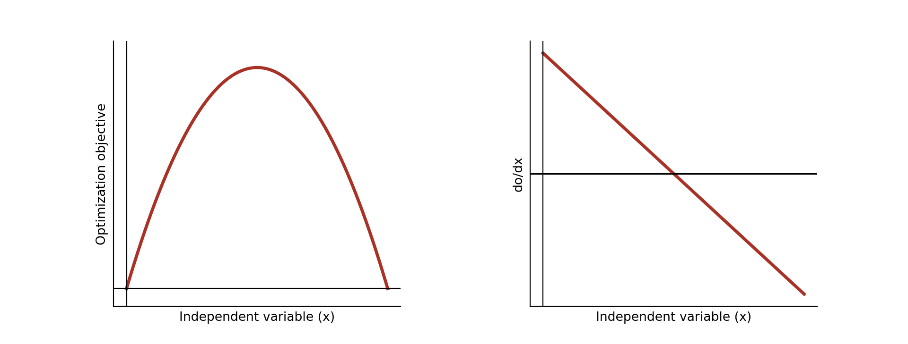
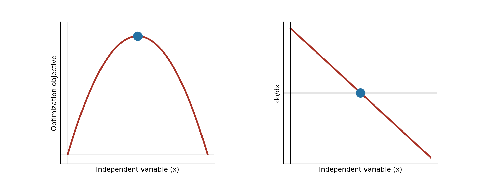
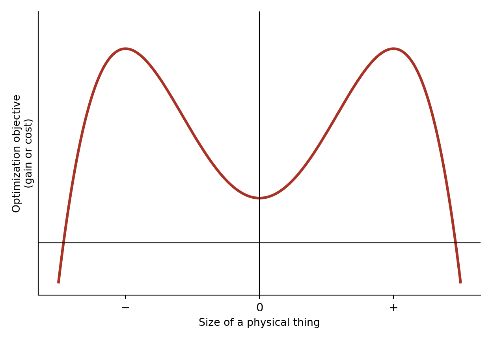
¿Necesitamos cálculo?
Para problemas simples: No. Puedes graficar fácilmente la función y encontrar el máximo.
Esta técnica se llama grid-search, y se usa en el aprendizaje automático (o métodos alternativos como el descenso de gradiente).
Sin embargo, la visualización/grid-search no puede escalar a problemas multivariables. En la práctica, el cálculo es «necesario» para los problemas de optimización.
Optimizar para áreas de superficie
En esta presentación, aprenderás
Adquirir experiencia con problemas simples de optimización.
Aprender sobre agricultores y jardineros ;)
¿Cómo resolver problemas de optimización?
Paso 1:
Analizar el problema para identificar restricciones y el objetivo de optimización.
Paso 2:
Dibujar diagramas, escribir ecuaciones, despejar variables.
Paso 3:
Esbozar o graficar la función de optimización.
Paso 4:
Resolver la optimización.
Paso 5:
Responder la pregunta original.
Ejemplo -1- El jardin del Jardinero
Un jardinero necesita 100 metros cuadrados para cultivar granadas usando la menor cantidad de cercado para rodear el área.
Encontrar las longitudes de los lados del área del jardín.
Un jardinero necesita 100 metros cuadrados para cultivar granadas usando la menor cantidad de cercado para rodear el área.
Encontrar las longitudes de los lados del área del jardín.
Distracción inútil
Información útil
Restricción
Respuesta buscada
Objetivo de optimización
Ejemplo -1- El jardin del Jardinero
\({\color{goldenrod} A} = {\color{teal} x}{\color{goldenrod} y} = {\color{navy} 100}\)
\({\color{#c0392b} P} = {\color{teal} 2x}+{\color{goldenrod} 2y}\)
\(y\)
\(x\)
\[{\color{#c0392b} P''} = \frac{400}{{\color{teal} x}^3}\]
\[A = {\color{teal} x}{\color{goldenrod} y}\]
\[{\color{goldenrod} y} = \frac{100}{{\color{teal} x}}\]
\[{\color{#c0392b} P} = {\color{teal} 2x} + {\color{goldenrod} 2y} = {\color{teal} 2x} + \frac{200}{{\color{teal} x}}\]
\[{\color{#c0392b} P'} = 2 - \frac{200}{{\color{teal} x}^2}\]
\[0 = 2 - \frac{200}{{\color{teal} x}^2}\]
\[\frac{1}{{\color{teal} x}^2} = \frac{1}{100}\]
\[{\color{teal} x}^2 = 100\]
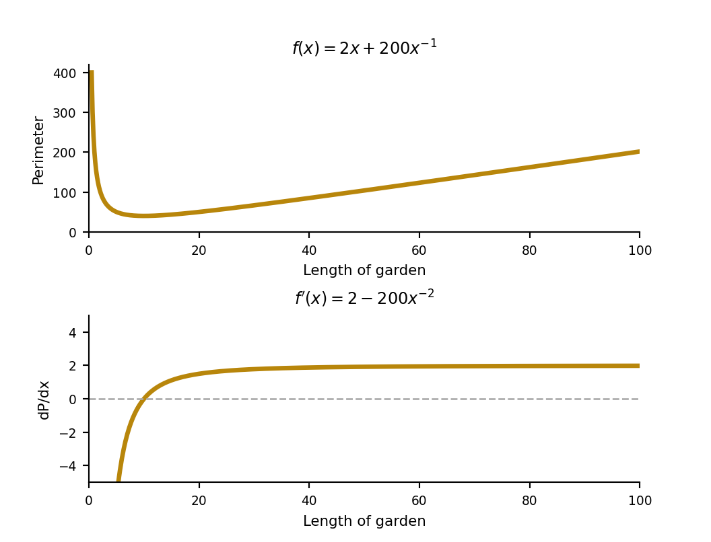
Respuesta:
El jardinero usa la menor cantidad de cercado cuando el rectángulo es un cuadrado (ambos lados son 10 metros), y la cantidad total de cercado es 40 metros.
Ejemplo -2- La cerda del Granjero
Los granjeros Fred y Fran son vecinos. Fred quiere cercar un rectángulo de 400 m² que comparte un lado con Fran. Fran acepta pagar el 50% del costo de ese lado. La cerca cuesta 100 euros/metro. Encuentra las longitudes de los lados que minimicen el costo de la cerca de Fred.
Distracción inútil
Información útil
Restricción
Respuesta buscada
Objetivo de optimización
Ejemplo -2- La cerda del Granjero
\({\color{navy} A} = {\color{teal} x}{\color{goldenrod} y}\)
\({\color{#c0392b} C} = {\color{teal} 2x}+{\color{goldenrod} y}+{\color{goldenrod} y}/2\)
\(y\)
\(x\)
\[{\color{navy} 400} = {\color{teal} x}{\color{goldenrod} y}\]
\[{\color{navy} 400} = {\color{teal} x}{\color{goldenrod} y}\]
\[{\color{goldenrod} y} = \frac{400}{{\color{teal} x}}\]
\[{\color{#c0392b} C} = {\color{teal} 2x} + \frac{3{\color{goldenrod} y}}{2}\]
\[= {\color{teal} 2x} + \frac{3 \cdot \frac{400}{{\color{teal} x}}}{2}\]
\[{\color{navy} 400} = {\color{teal} x}{\color{goldenrod} y}\]
\[{\color{goldenrod} y} = \frac{400}{{\color{teal} x}}\]
\[{\color{#c0392b} C} = {\color{teal} 2x} + \frac{3{\color{goldenrod} y}}{2}\]
\[= {\color{teal} 2x} + \frac{3 \cdot \frac{400}{{\color{teal} x}}}{2}\]
\[= {\color{teal} 2x} + \frac{600}{{\color{teal} x}}\]
\[= {\color{teal} 2x} + 600{\color{teal} x}^{-1}\]
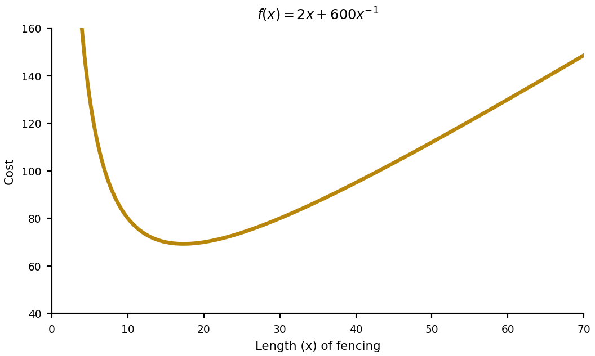
\[{\color{#c0392b} C'} = 2 - 600{\color{teal} x}^{-2}\]
\[{\color{#c0392b} C'} = 2 - 600{\color{teal} x}^{-2}\]
\[0 = 2 - 600{\color{teal} x}^{-2}\]
\[600{\color{teal} x}^{-2} = 2\]
\[{\color{teal} x}^{-2} = \frac{1}{300}\]
\[{\color{teal} x}^{2} = 300\]
\[{\color{teal} x} = +\sqrt{300}\]
\[= \sqrt{25} \cdot \sqrt{4} \cdot \sqrt{3} = 10\sqrt{3} \approx 17.32\]
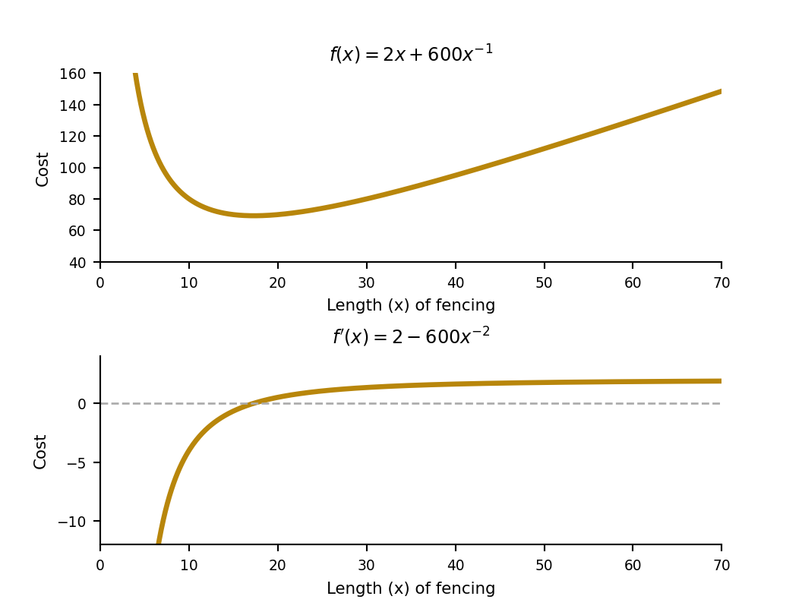
Los granjeros Fred y Fran son vecinos. Fred quiere cercar un rectángulo de 400 m² que comparte un lado con Fran. Fran acepta pagar el 50% del costo de ese lado. La cerca cuesta 100 euros/metro. Encuentra las longitudes de los lados que minimicen el costo de la cerca de Fred.
\[{\color{teal} x} = 10\sqrt{3} \approx 17.32\]
\[{\color{goldenrod} y} = \frac{400}{10\sqrt{3}} \approx 23.1\]
Optimizar para volumen
En esta presentación, aprenderás
Ganar más experiencia con problemas simples de optimización.
Ver que pequeños cambios en la descripción del problema pueden llevar a cambios significativos en el resultado.
Ejemplo -1- La caja de la señora de los gatos
La señora loca de los gatos del vecindario quiere construir una caja para que sus gatos se sienten. Empieza con una hoja plana de cartón (45×80 cm) y recortará esquinas cuadradas para doblar los lados. ¿De qué tamaño deben ser las esquinas para hacer la caja más grande?
Distracción inútil
Información útil
Restricción
Respuesta buscada
Objetivo de optimización
Ejemplo -1- La caja de la señora de los gatos
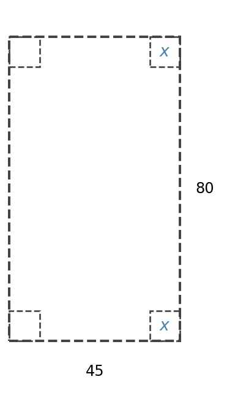
\[A = LWH\]
\[= (80 - 2{\color{teal} x})(45 - 2{\color{teal} x}){\color{teal} x}\]
\[= \left[(80)(45) - (80)(2{\color{teal} x}) - (2{\color{teal} x})(45) + (-2{\color{teal} x})(-2{\color{teal} x})\right] {\color{teal} x}\]
\[= (4{\color{teal} x}^2 - 250{\color{teal} x} + 3600) \, {\color{teal} x}\]
\[= 4{\color{teal} x}^3 - 250{\color{teal} x}^2 + 3600{\color{teal} x}\]
\[A' = 12{\color{teal} x}^2 - 500{\color{teal} x} + 3600\]
\[{\color{teal} x} = \{9.256, \; 32.410\}\]
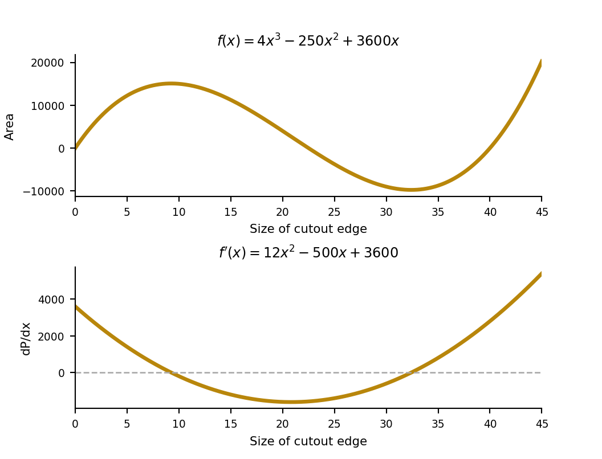
Ejemplo -2- Cubo de Qberto
Qbert fabrica cajas cerradas de 200 cm³, con la parte superior e inferior siendo cuadrados.
Pero el material es caro y Qbert es un alien honesto y trabajador. ¿De qué tamaño deben ser las aristas para minimizar los costos de material?
Distracción inútil
Información útil
Restricción
Respuesta buscada
Objetivo de optimización
Ejemplo -2- Cubo de Qberto
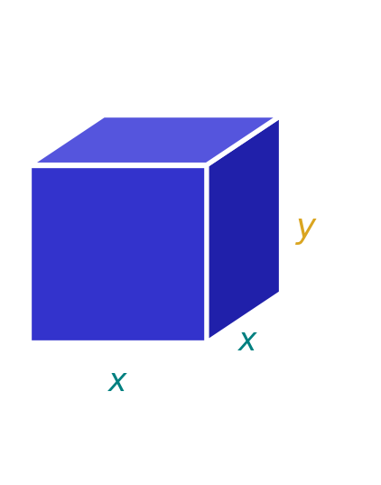
\[V = {\color{teal} x}{\color{teal} x}{\color{goldenrod} y} = {\color{teal} x}^2{\color{goldenrod} y} = 200\]
\[{\color{goldenrod} y} = \frac{200}{{\color{teal} x}^2}\]
\[S = 2{\color{teal} x}^2 + 4{\color{teal} x}\left(\frac{200}{{\color{teal} x}^2}\right)\]
\[= 2{\color{teal} x}^2 + \frac{800}{{\color{teal} x}}\]
\[S' = 4{\color{teal} x} - \frac{800}{{\color{teal} x}^2}\]
\[0 = {\color{teal} x} - \frac{200}{{\color{teal} x}^2}\]
\[0 = 1 - \frac{200}{{\color{teal} x}^3}\]
\[\frac{1}{{\color{teal} x}^3} = \frac{1}{200}\]
\[{\color{teal} x} = \sqrt[3]{200} \approx 5.848\]
\[{\color{goldenrod} y} = \frac{200}{(\sqrt[3]{200})^2} = (200^{3/3})(200^{-2/3}) \approx 5.848\]
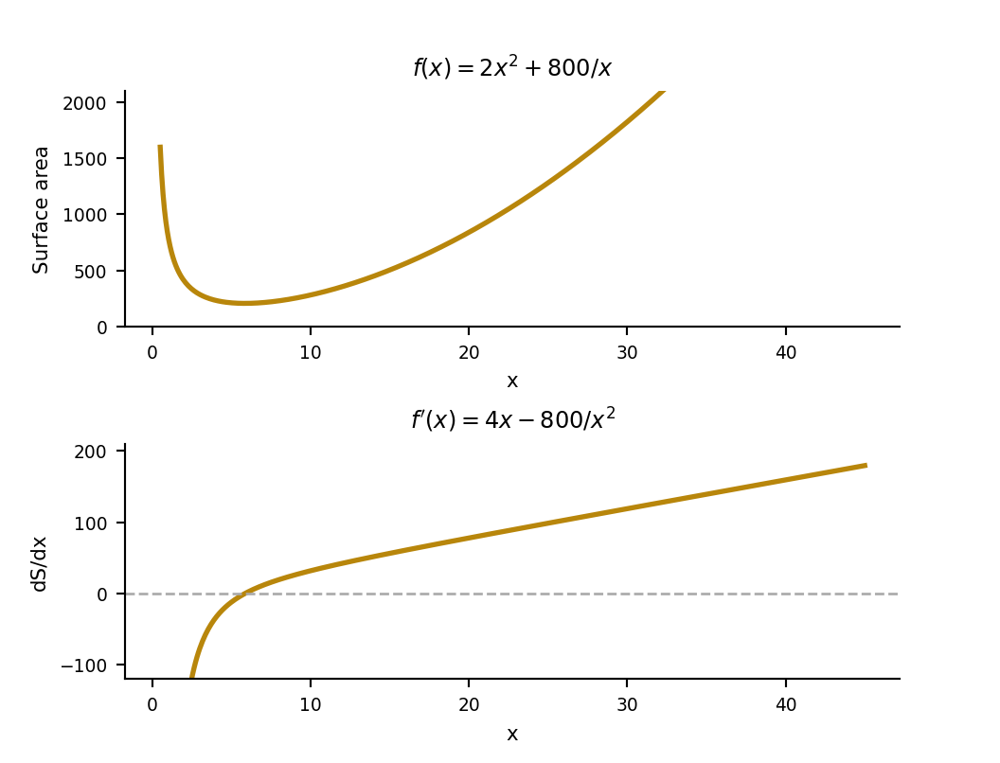
Ejemplo -3- El ahorro de costos de Qbert
Qbert fabrica cajas abiertas de 200 cm³, con el fondo siendo un cuadrado y sin tapa.
Pero el material es caro y Qbert es un alien honesto y trabajador. ¿De qué tamaño deben ser las caras para minimizar los costos de material?
Ejemplo -3- El ahorro de costos de Qbert
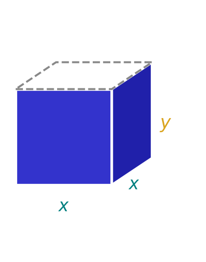
\[V = {\color{teal} x}{\color{teal} x}{\color{goldenrod} y} = {\color{teal} x}^2{\color{goldenrod} y} = 200\]
\[{\color{goldenrod} y} = \frac{200}{{\color{teal} x}^2}\]
\[S = {\color{teal} x}^2 + 4{\color{teal} x}\left(\frac{200}{{\color{teal} x}^2}\right)\]
\[{\color{teal} x} = \sqrt[3]{400} \approx 7.368\]
\[{\color{goldenrod} y} = \frac{200}{(\sqrt[3]{400})^2} \approx 3.684\]
⊘
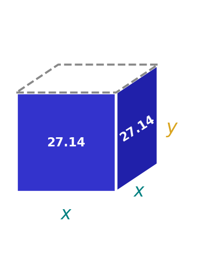
Qbert fabrica cajas abiertas de 200 cm³, con el fondo siendo un cuadrado y sin tapa.
Pero el material es caro y Qbert es un alien honesto y trabajador. ¿De qué tamaño deben ser las caras para minimizar los costos de material?
\[{\color{teal} x}^2 = (\sqrt[3]{400})^2 = 20\sqrt[3]{20} \approx 54.29\]
\[{\color{teal} x}{\color{goldenrod} y} = 200/\sqrt[3]{400} \approx 27.14\]
Descenso de gardiente
En esta presentación, aprenderás
Qué significa el “descenso de gradiente” y por qué lo necesitamos.
El algoritmo de descenso de gradiente.
Descenso de gardiente: Teoría y motivación
Aprendiendo por descenso de gradiente:
- Adivina una solución.
- Calcula el error (los errores cometidos).
- Aprende de los errores para mejorar la siguiente suposición.
Comienza con una descripción matemática del “paisaje” del error del problema (el costo, también conocido como el objetivo de minimización), y luego encuentra el mínimo del paisaje.
¡Las derivadas al rescate!
Descenso de gradiente es como encontar raíces
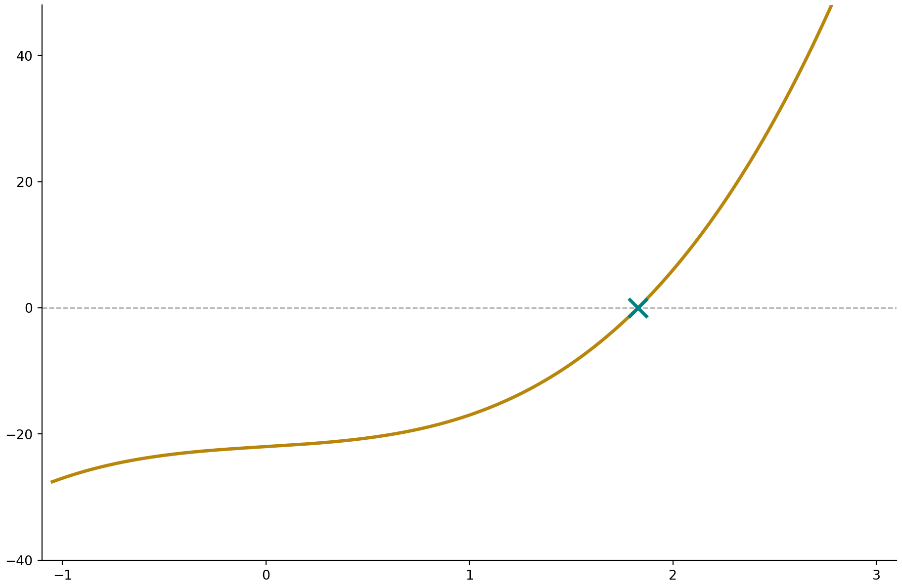

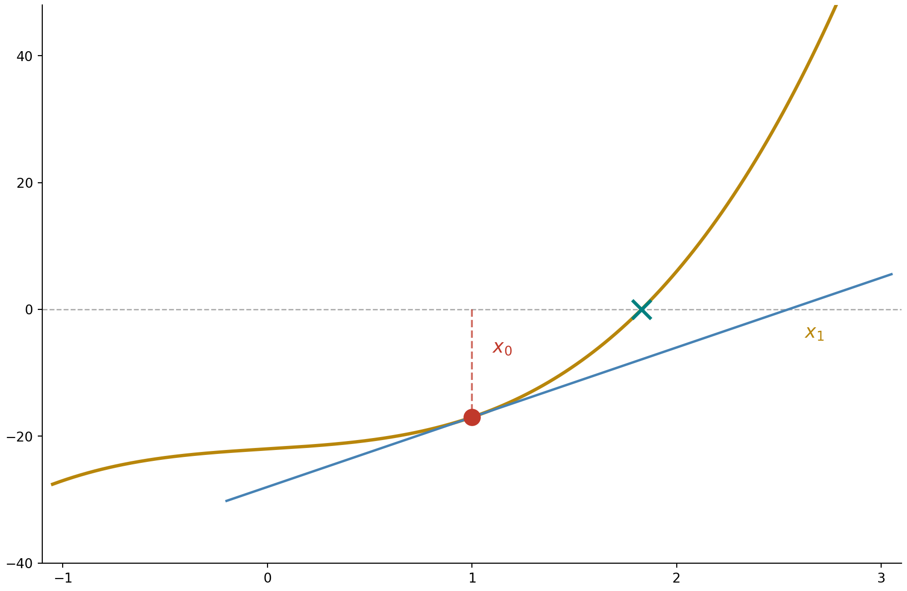


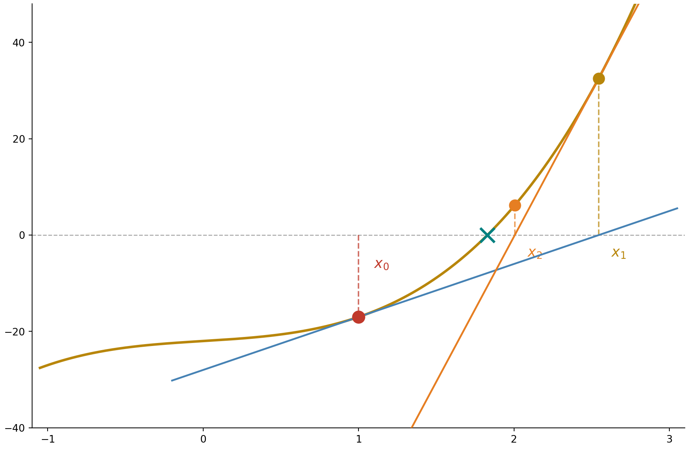
¿Qué es el descenso de gradiente?
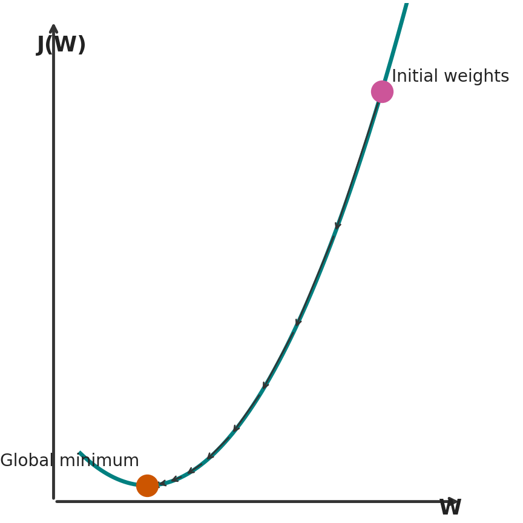
kdnuggets.com/2018/06/intuitive-introduction-gradient-descent.html
https://en.wikipedia.org/wiki/Gradient_descent
El descenso de gradiente es incorrecto???
Initialize random guess of minimum
loop over training iterations
Compute derivative at guess
Update guess: previous guess minus derivative scaled by learning rate
\[\text{Goal: } \min\{ {\color{goldenrod} f}({\color{teal} x}) \}\]
\[\text{guess } {\color{teal} x_m}\]
\[\text{loop:}\]
\[{\color{goldenrod} d} = {\color{goldenrod} f}'({\color{teal} x_m})\]
\[{\color{teal} x_m} = {\color{teal} x_m} - {\color{goldenrod} d} \cdot {\color{goldenrod} \alpha}\]
El descenso de gradiente es incorrecto???
\[{\color{goldenrod} f}({\color{teal} x}) = 3{\color{teal} x}^2 - 3{\color{teal} x} + 4\]
\[\frac{d{\color{goldenrod} f}}{d{\color{teal} x}} = 6{\color{teal} x} - 3\]
\[0 = 6{\color{teal} x} - 3\]
\[6{\color{teal} x} = 3\]
\[{\color{teal} x} = 0.5\]
Mínimo local vs global
Gradiente vs f’()=0
El descenso de gradiente se usa en problemas de alta dimensionalidad (p.ej., millones de variables).
También se usa cuando la derivada es desconocida o solo puede estimarse localmente.
Las soluciones “suficientemente buenas” son generalmente aceptables en ML.
La mayoría de las limitaciones del descenso de gradiente tienen soluciones o estrategias de mitigación.
¡Usa la derivada para obtener una optimización exacta siempre que sea posible!
El descenso de gradiente es una alternativa increíble para problemas de optimización computacional o matemáticamente intratables.
¡Hay muchas otras técnicas de optimización! Muchas (pero no todas) involucran derivadas.

© 2025 Elvis Sánchez – Universidad Técnica de Machala